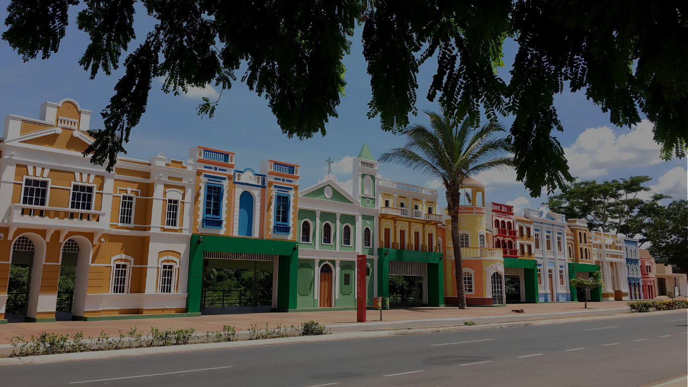
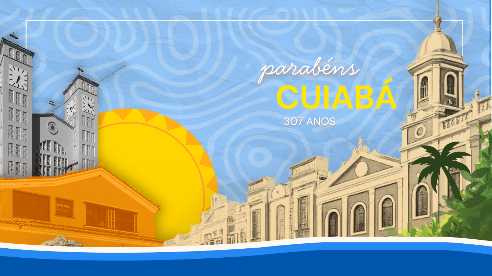
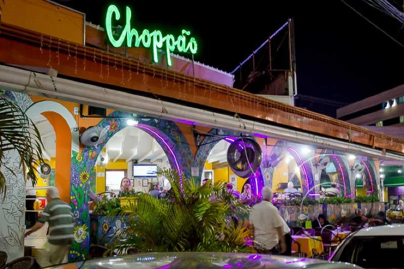

Turismo e Lazer
História, cultura e natureza em um só lugar.




Cuiabá, capital de Mato Grosso, é uma metrópole histórica fundada em 1719 no ciclo do ouro, localizada no centro geodésico da América do Sul.
História, cultura e natureza em um só lugar.

Sabores típicos que representam a cultura cuiabana.



Tradições e expressões culturais da região.

A viola de cocho é umm instrumento típico da região do Pantanal e da Baixada Cuiabana, com origem no período colonial. Ela surgiu da adaptação de instrumentos portugueses, mas foi transformada pelos povos locais - especialmente indígenas, africanos e ribeirinhos. O nome "cocho" vem do fato de que ela é escavada em um único bloco de maddeira, como um cocho usado para alimentar animais. Esse modo de produção artesanal é passado de geração em geração.

As bonecas de barro de Cuiabá fazem parte da tradição ceramista da região, com raízes que também remontam ao período colonial, influenciadas principalmente pelas culturas indígena e africana. Essas peças são moldadas manualmente, sem moldes industriais, e costumam representar: Mulheres cuiabanas, cenas do cotidiano, elementos da cultura regional.
Clique, explore e descubra Cuiabá